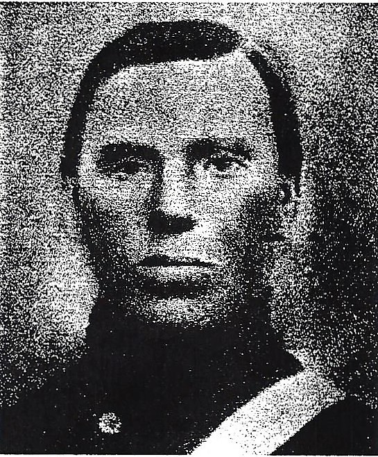

Civil War

The American Civil War had started with the issue of slavery, especially the extension of slavery into the western territories. It started in 1861 and ended in 1865 with in that period there was immense combat that created 620,000 to 750,000 soldier’s deaths. Which is a higher number of deaths in World War I and World War II combined. The Confederacy fell and slavery was abolished in the entire country. Some of the biggest advancements in technology in the Civil War were the repeating rifle, iron clad and the use of the train systems.
Sever T Sureson(Severson)
{kind=link}
{kind=link}
Sever entered into service on May 4, 1861, he was enlisted into Company K Third Wisconsin Veteran Infantry that was located in Christiana, Wisconsin. Sever left the service in July 18, 1865. The infantry was organized in Fond du Lac, Wisconsin and the regiment left the state on July 12 which than they reported at Hagerstown, Maryland. From this point forward he was in multiple engagements which he served under General Pope and then General McClellan which later signed as Commander in Chief. The following are all the engagements he was in:
| Boliver Heights,VA | Chancellorsville,VA | Kenesaw Mountain,GA |
| Winchester,VA | Beverly Ford,VA | Peach Tree Creek,GA |
| Buckton Station,VA | Gettysburg,PA | Siege of Atlanta,GA |
| Newtown,VA | Resaca,GA | Harrison's Plantation,GA |
| Winchester,VA | Cassville,GA | Argyle Island & Izzard's Plantation |
| Cedar Mountain,VA | Dallas or New Hope Church,GA | Robertsville, SC |
| Beverly Ford,VA | Lost Mountain,GA | Averasboro,NC |
| Antietam,MD | Pine Knob,GA | Bentonville,NC |
| Germainia Ford,VA | Powder Spring Road,GA |